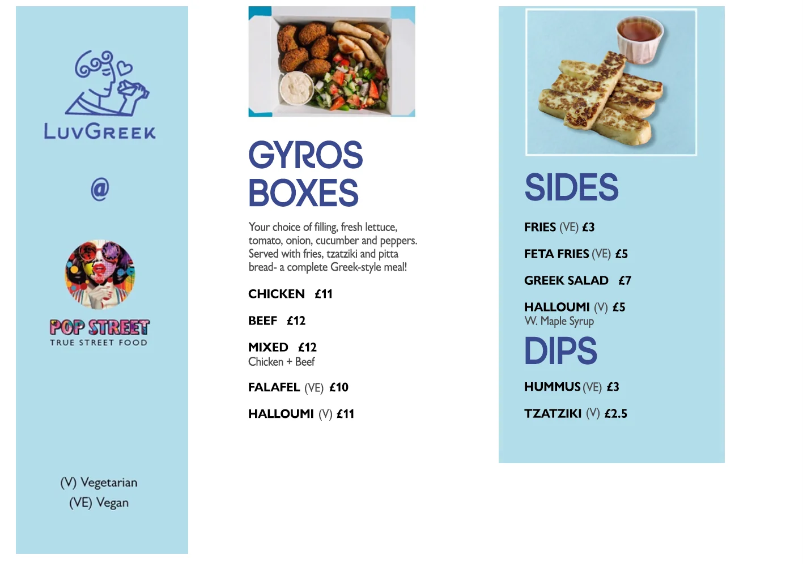

All projects
Project · Graphic Design
Pop Street Birmingham
Bold restaurant menu designs created for Bulls Street Burgers and LuvGreek at Pop Street Birmingham.
Creative direction
Distinct menus for two food brands
The Bulls Street Burgers menu uses a bold, high-contrast visual direction designed to match the energy of the brand and make key food items immediately noticeable.
The LuvGreek menu takes a cleaner, more modern approach while keeping the information clear and easy to scan.
Client locationBirmingham
DeliverableRestaurant menus
CreatedMay 2026
Project gallery
Menu design collection
Two visual systems adapted to the personality and menu offering of each restaurant brand.

Next project
View project